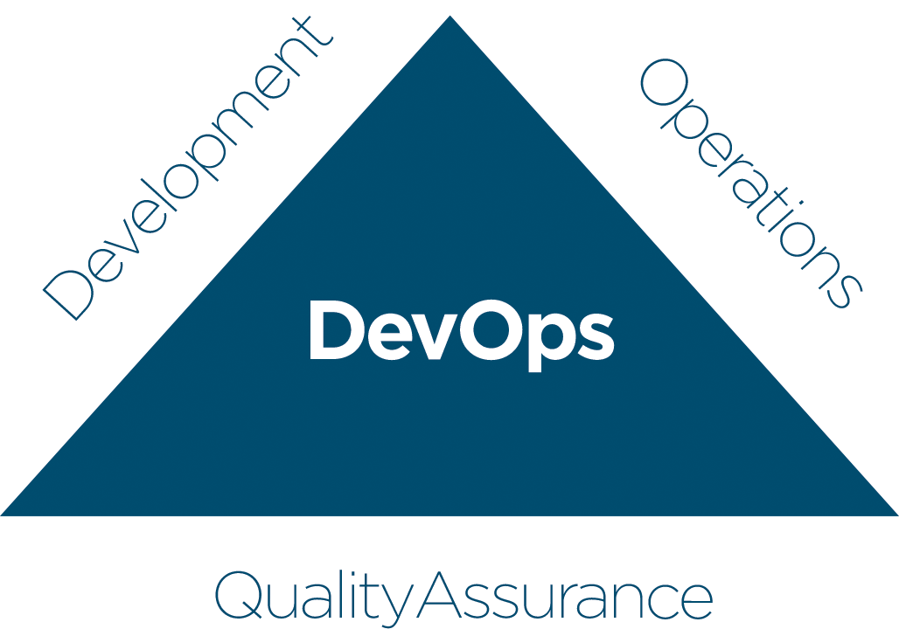

Development-Operations-QA
DevOps movement is an approach of traditional Application Lifecycle Management.
Aims to promote a new culture to operations development engineers, to work together in the entire process, from design through the development process to production support.
DevOps practices emphasizes on four key principles:

Culture: cultural shift is often required to
adopt DevOps practices. Improve
communication between departments
should align entire organization to improve
the entire software lifecycle. Be smart.
Improve your processes by reviewing
them iteratively. Is possible to improve
productivity of your team step by step
Automation: Any manual action is likely to
be executed with errors. Trust machines to
run your processes. Automate your
processes to be executed more reliable
and quickly. It also allows your team to
self-service across your test and
production environment, reduce defects in
deployments and create a consistency of
the whole environment.
Measure: to measure your processes is
the first step to improve them. Base your
decisions in data, rather than instinct.
Define your own key indicators for your
business goals and base your continuous
improvement on improve those KPIs.
Large companies will be able to determine
what areas need to be improved, defining
clearly business goals and processes.
Sharing: this is the loopback in the cycle.
People sharing their tools, ideas or
problemas across teams, or communities
will enrich your tools and open channels of
feedback and so leads to improvement.
Enformat Team will help your organization
to open mind of your managers and
engineers, to adopt new practices and
improve productivity, deliverables and
quality of your solutions. Contact us to get
a free assessment.